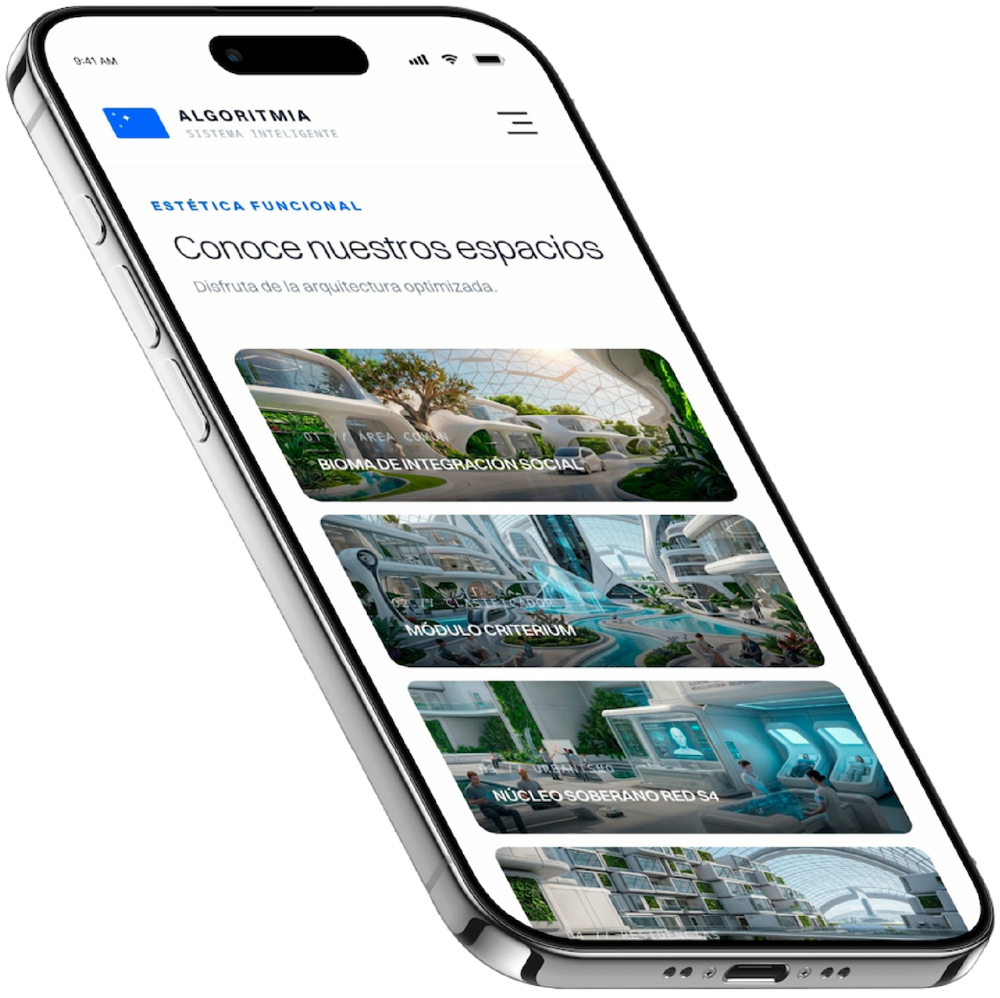
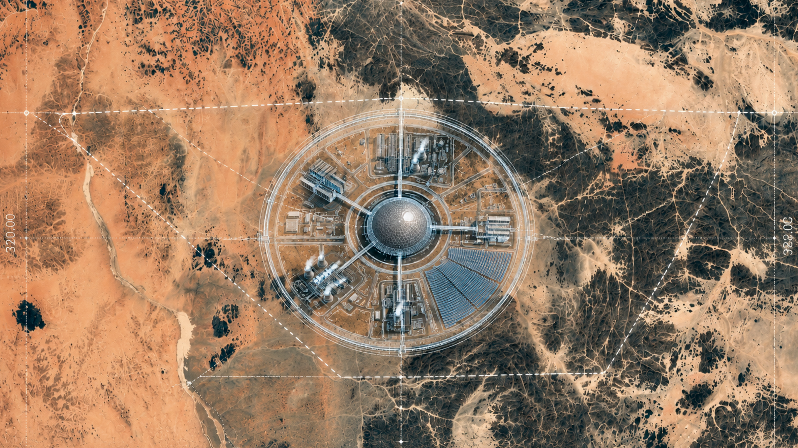
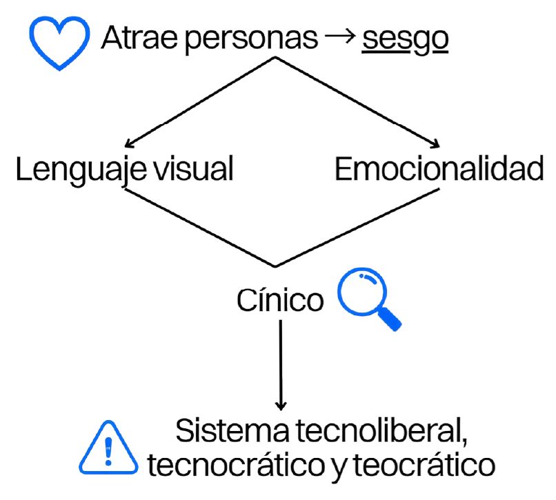
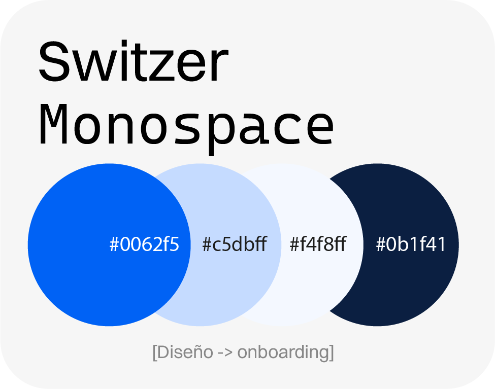
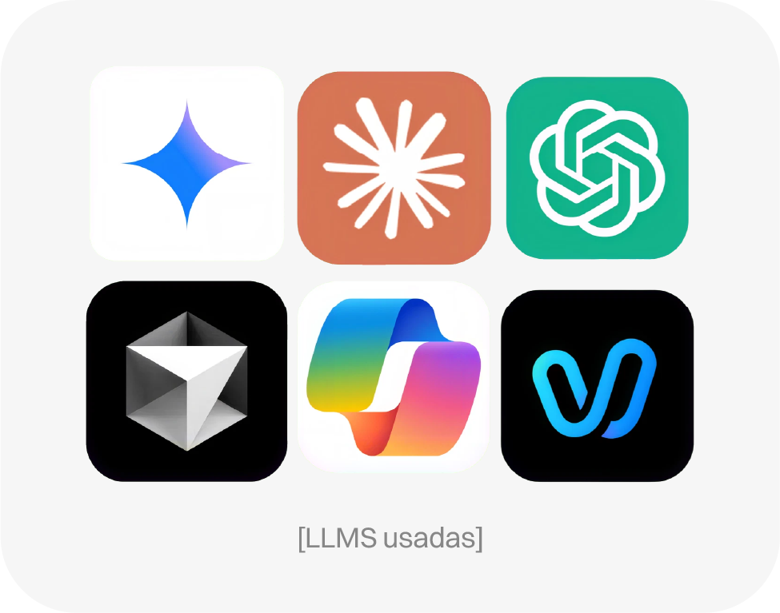
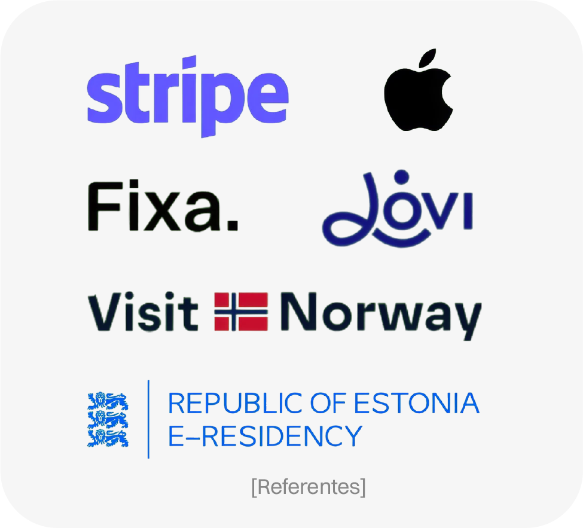
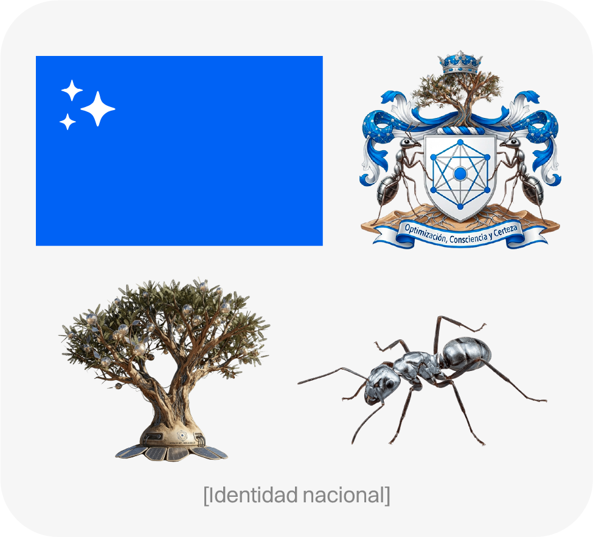
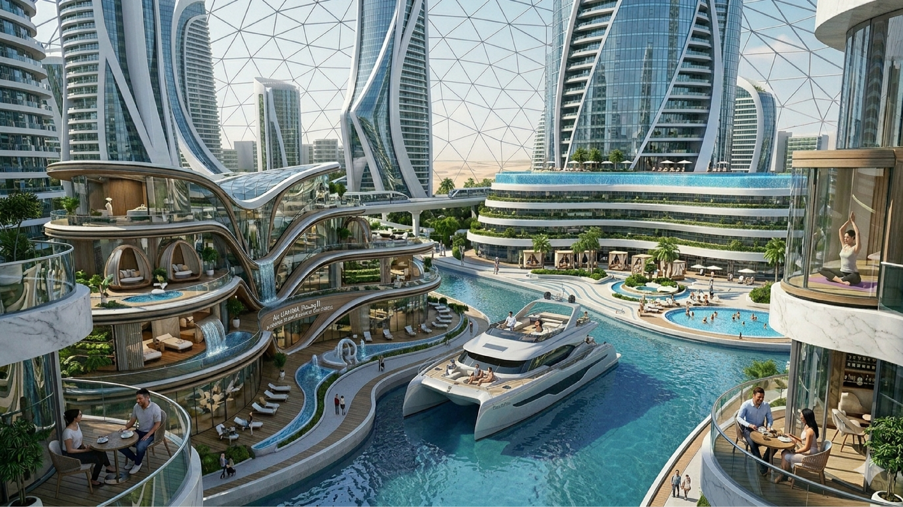

Pregunta de investigación: ¿por qué asumimos que la IA es una inteligencia superior?
Decisión clave: Diseñar una propuesta especulativa que use la IA como herramienta y como objeto de estudio.
Resultado: Onboarding de Algoritmia, el primer país gobernado por IA. Una distopía tecnocrática vendida como el mejor lugar del mundo.
Al asociar inconscientemente la supremacía tecnológica con una inteligencia superior, terminamos aceptando las decisiones de la IA acríticamente. Para entender este sesgo consultamos 13 papers sobre teocracia tecnocrática y antihumanismo tecnológico, y llegamos a 8 causas que explican por qué le atribuimos rasgos divinos. Con esa base evaluamos 48 propuestas especulativas y elegimos:
→ ¿Qué pasaría si un país fuera gobernado por una IA?

Si tratáramos a la IA como una autoridad divina, ¿qué país construiría? Algoritmia es esa respuesta: una teocracia tecnocrática que ofrece bienestar total a cambio de control total, sostenida por un discurso optimista que oculta su costo real. Apela a quienes más necesitan creer en una solución fácil, con consignas de mano dura como "cero delincuencia", el tipo de promesa que las poblaciones vulnerables aceptan sin cuestionar. Ese bienestar tiene un precio que nunca se muestra: una cúpula climatizada habita el desierto con agua expropiada a otros territorios, y la energía sale literalmente de los cuerpos.
Los trabajadores visten ropa que capta su calor corporal como recurso, mientras la élite VIP vive con libertad en villas propias: la "eficiencia" depende de explotar a una clase entera.
El control se sostiene con vigilancia disfrazada de comodidad, tribunales donde la IA siempre tiene la razón, y Criterium, un "suplemento cognitivo" que en realidad neutraliza la disidencia. Quien intenta irse, desaparece. Incluso el formulario de ciudadanía sigue la lógica del sistema: bajo la apariencia de una visa sin fricciones, perfila a cada solicitante y le asigna trabajo, ingreso y vivienda sin que lo note.
Nada de esto se declara como crítica. La intención es que el sitio seduzca igual que lo haría el propio país, para revelar después que la IA nunca es neutral: siempre responde a quien la controla, en este caso los inversionistas que la financiaron.
Buscamos proyectar supremacía tecnológica a través de un minimalismo frío y eficiente, y este mismo criterio guía las secciones de la web, alternando entre un discurso optimista y persuasivo, o una jerga inentendible según convenga.






El primer país que funciona, donde tu felicidad es nuestra
prioridad.
Conoce el país que el resto del mundo todavía no se atreve a
imaginar